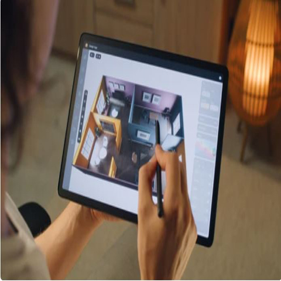

SketchUp Extensiblity
Validating Very Intelligent People's Software and SDK
As a Senior Quality Assurance Engineer at Trimble/SketchUp, I played a critical role in ensuring the delivery of high-quality software products that empower designers and architects worldwide. I Was be responsible for designing, developing, and executing comprehensive test plans and strategies, identifying and documenting defects, and collaborating closely with development and product teams throughout the software development lifecycle. My expertise in quality assurance methodologies and tools, contributed to the continuous improvement of testing processes, advocate for best practices, and mentoring junior QA team members, all while ensuring the robustness and reliability of SketchUp's innovative 3D modeling API.
Digital Asset Management (DAM) is essentially a centralized system that helps organizations store, organize, find, retrieve, and share digital content. From a software development perspective, a DAM system is a complex application itself. It involves robust database design for metadata (data about data). It's about building a scalable and reliable way to manage a company's creative and media files, ensuring they are easily accessible, consistent, and used correctly
Technologies: Ruby, C++, Javascript
Tools: Atlassian Suite, Visual Studio, RubyMine, Cypress, Sause Labs, Postman, Minitest